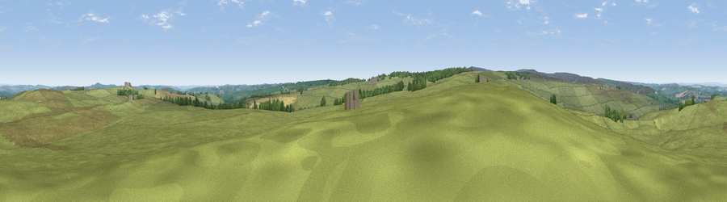

Viewpoint near Castleside
#20806 in England · top 50% of its area beats it · near Castleside · access?Where it is
The exact computed spot (NZ 07075 45775). Click the marker for map links.
Public access: no public right of way or access land is recorded at this exact spot — it may be on private land. Computed from Natural England's CRoW access layer and OpenStreetMap rights of way — not the legal definitive map. Always verify locally.
The view, rendered

A 360° render of this exact spot computed from the terrain model, tree cover and land cover — summer colours, afternoon light, calibrated against photographs of famous viewpoints. Real trees, hedges and buildings will differ in detail.
The panorama
Grey silhouette: terrain skyline in each direction (720 bearings, Earth curvature and refraction included). Dashed green: skyline with trees (+15 m) and buildings (+8 m) as obstacles. Blue strip: how far the ground is visible on each bearing.
Where the view opens
Wedge length = distance to the farthest visible ground on that bearing (vegetation-aware). Rings at 10, 25 and 50 km.
What fills the view
90% grassland · 5% cropland · 4% woodland ·
Angular shares of the visible panorama (visual magnitude), not map area. Landscape diversity 0.18 (0–1 Shannon).
Key numbers
More beautiful places nearby
The staircase of upgrades: each row has a higher view potential than everything closer. Driving times are estimates from straight-line distance, calibrated against real road routing — check an actual route before setting out.
| Place | Direction | Drive | Score |
|---|---|---|---|
| Viewpoint near Castleside | NNE · 1 km | ~4 min | 51.4 |
| Viewpoint near Castleside | NNE · 2 km | ~4 min | 55.9 |
| Viewpoint near Wolsingham | S · 5 km | ~12 min | 63.0 |
| Viewpoint near Edmundbyers | WNW · 6 km | ~14 min | 65.0 |
| Collier Law | SW · 7 km | ~14 min | 71.7 |
| Pontop Pike | NE · 11 km | ~20 min | 77.8 |
| Little Dun Fell | WSW · 39 km | ~58 min | 78.4 |
| Cross Fell | WSW · 40 km | ~59 min | 78.7 |
54.80680, -1.89145 · source: screening · position refined by local search. Computed location — check access rights before visiting.